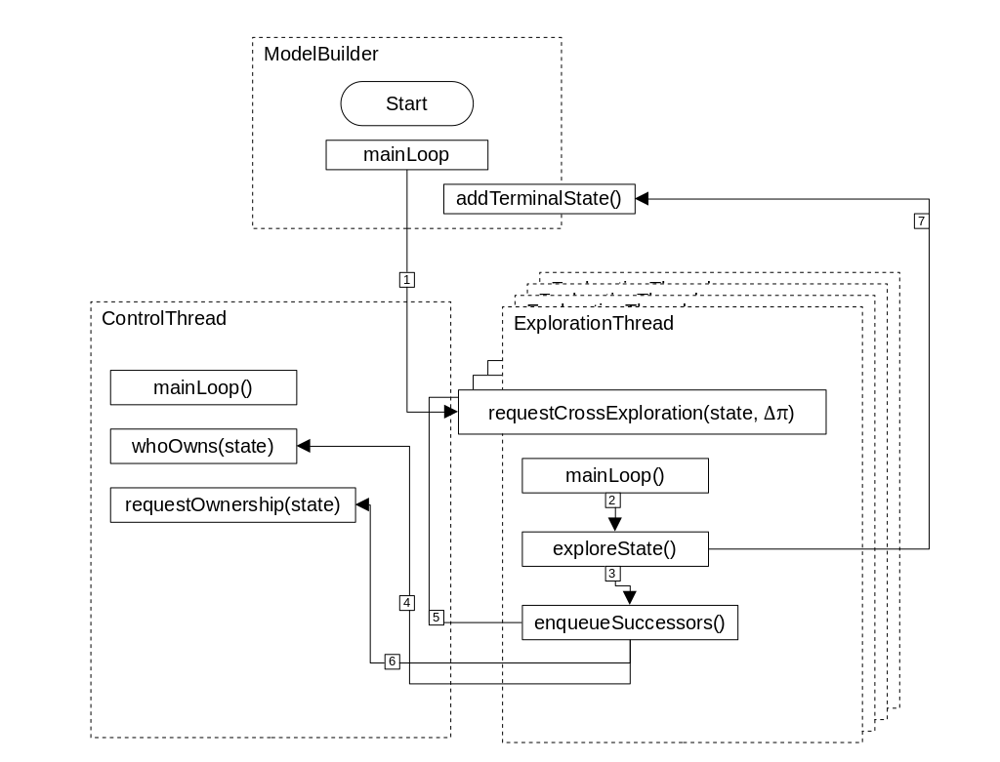

The STAMINA Algorithm(s)
STAMINA contains multiple algorithms to perform state-space truncation. This page will provide an overview of them
The STAMINA 1.0 Algorithm
STAMINA 1.0 was originally developed by several students under Dr Zhen Zhang, including Thakur Neupane. The basic idea of the algorithm is that for each iteration of κ, states are only explored if an estimated reachability value (based somewhat on the embedded DTMC). While the probability estimate window is too wide, κ is progressively reduced and state exploration is continued. The problem with this was that as κ was reduced, we had no way to continue exploring states we had already truncated in previous iterations.
The STAMINA 2.0/2.1 Algorithm
STAMINA 2.0 is the naïve approach to fixing the problem presented in STAMINA 1.0: simply re-explore the entire state space with the current value of κ. The logic regarding performance is that model checking with PRISM was the bottleneck in the algorithm, whereas the state exploration was extremely fast, likely because the PRISM model checker spent far more time checking rather than building the model. However, when this was implemented in C++ to interface with the STORM model checker, precisely the opposite was found: that the model building and truncating were the bottleneck.
However, the entirety of STAMINA 2.0 was far from naïve. STAMINA 2.0 introduced a new means of keeping track of state reachability, solving another problem in STAMINA 1.0: when a state had been explored, its reachability probability was zeroed out, allowing state re-exploration, and multiple paths to a state to contribute to a state's estimated reachability. This novelty earned it a spot in VMCAI'22.
Dynamic Programming Improvements (STAMINA 2.5)
In order to make STAMINA/STORM faster, in addition to memory pooling and decreased use of std::unordered_map and std::unordered_set (which after much testing, were determined to be far slower than the Java equivalent), certain dynamic programming improvements were devised to the STAMINA 2.0 algorithm. Please note that these are implemented exclusively in the STORM integration. The improvements simply keep track of the reachability that would have been lost in previous iterations and enqueue "lost" states to be explored alongside terminal states of the last iteration, rather than either the initial state (STAMINA 2.0) or the previous terminal states (STAMINA 1.0).
See a Visual Explainer of the STAMINA Algorithm:
STAMINA's Multithreading Protocol
Another major novel improvement slated to be released with STAMINA 2.5 is the use of multi-threading, and a custom protocol for the control thread to grant access without having to store mutual-exclusions for every state (extremely memory intensive), or having to lock all or part of the state space every time a thread requests control of a state (reduces the improvement of multithreading). This new protocol is among the improvements we are looking to include in a paper this fall.
The STAMINA multithreading protocol is based on two main ideas: first, that threads can "own" states and only explore states that they own, and second, that ownership of states can expire after a certain amount of time. Threads can ask who owns a state without locking the mutex on the datastructure keeping track of that, but they must lock that mutex in order to request ownership of the state. A single control thread mantains the governing data structure, and state ownership expires based on a LRU (least-recently used) policy.
The following diagram demonstrates how data is passed around in STAMINA's multithreading protocol.
Legend:
- The main loop of the ModelBuilder class explores in a single-thread until the number of terminal states is greater than or equal to the number of exploration threads.
- The main loop of the ExplorationThread class checks if there are cross-exploration requests and explores them, prioritizing slightly above its own queue.
- If the state reachability is above κ, we enqueue the successors of a state.
- For each successor, we check which thread owns the state. This check does not lock the mutex because it is not a write.
- If the state is owned by another ExplorationThread, we request cross exploration from that thread with the path probability we have, called Δπ.
- If the state is new, then we request ownership. If successful, we put in our main exploration queue.
- If the state we are exploring has a reachability below κ, we set it as terminal and send it to the builder class
The STAMINA 3.0 Algorithm
STAMINA 3.0 (not yet released) reduces complexity of the algorithm further. Rather than using κ and rκ to conditionally truncate states, all states, as they are explored, are inserted into a priority queue on the value π[s], the estimated reachability of that state. States are explored in order of their estimated reachability. If a current state transitions into a state that is already enqueued, we do not force the queue to re-order until that state is dequeued and explored.
The STAMINA Heuristic Algorithm
The STAMINA Heuristic algorithm has not yet been implemented nor tested but would provide an alternate means of termination rather than estimated terminal reachability.